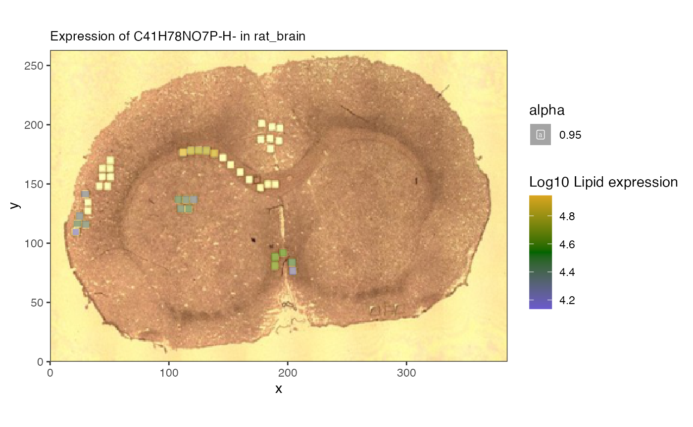

spammR lipidomic and proteomic integration
Sara Gosline
Feb 04, 2026
lipidProt.RmdAbout
The goal of this vignette is to showcase integration between two different omes in the same spatial context. For this we use a dataset from sections of rat brain measured via mass spetrometry imaging (MSI) to identify lipidomic measurements alongside proteomics from regions of interest from Vandergrift et al.
We show how spammR enables: - download and loading of
datasets - visualization of features within each dataset -
identification of correlated regions in this dataset
First we load the required packages.
Load proteomics data
The proteomics data can be found on zenodo and downloaded directly. From there.
Format data
We require formatting the data as a matrix for loading.
#brain data
finame <- paste0('https://zenodo.org/records/13345212/files/DESI+spatial',
'%20proteomics%20rat%20brain%20proteomics%20',
'result.xlsx?download=1')
fi <- download.file(finame,
dest = 'dat.xlsx')
#read in data, convert to matrix
dat <- readxl::read_xlsx('dat.xlsx')
feature_data <- select(dat, c(Protein,`Protein ID`,`Entry Name`,Gene)) |>
dplyr::distinct() |>
tibble::column_to_rownames('Protein')
dat <- select(dat, c(Protein, starts_with('ROI'))) |>
tibble::column_to_rownames('Protein')The image itself we downloaded separately from metaspace (see below) and stored it in the package.
##read in image
img <- system.file("extdata","brain_img_0.png",package = 'spammR')Now that the image is loaded we can visualize it (not done here to save space) to verify it is what we expect.
cowplot::ggdraw() + cowplot::draw_image(system.file("extdata",
"brain_img_0.png",
package = "spammR"))As you can see, there are squares chopped out of the image. These were the samples that were measured via proteomics. The next step is to map these coordinates so we can compare them with the MSI data.
Loading image coordinates rom GEOJson
We used the program [QuPath][(https://qupath.readthedocs.io/en/stable/) to collect the regions of interest (ROI) coordinates on the image. This program allowed us to highlight the regions of interest and export them in GEOJson format, which can then be used as input into spammR.
We store the GEOJson file in the package for you to load with this
example should you choose to load teo GEOJson using the
geojsonR package.
#remove this once we can include it in spammR
library(geojsonR)
jsondat <- FROM_GeoJson(system.file('extdata','brain_roi.geojson',
package = 'spammR'))
##herr er hry yhr
coords <- do.call(rbind, lapply(jsondat$features,function(x){
roi <- x$properties$name
xv <- x$geometry$coordinates[,1]
yv <- x$geometry$coordinates[,2]
if (is.null(roi))
roi = ""
return(list(ID = roi, x_pixels = min(xv), y_pixels = min(yv),
spot_height = max(yv) - min(yv),
spot_width = max(xv) - min(xv)))
})) |>
as.data.frame() |>
subset(ID != "") |>
tidyr::separate(ID,into = c('ROI','Replicate'),
sep = '_',
remove = FALSE) |>
tibble::remove_rownames() |>
tibble::column_to_rownames('ID')
##now for each ROI we want an x, y, cell height and cell_width
#y-coordinates are from top, so need to udpate
coords$y_pixels = 263 - unlist(coords$y_pixels) - unlist(coords$spot_height)
coords$x_pixels = unlist(coords$x_pixels)
coords$spot_height = unlist(coords$spot_height)
coords$spot_width = unlist(coords$spot_width)
readr::write_csv(as.data.frame(coords),file='../inst/extdata/bcoords.csv')To avoid this we just load the csv directly:
coords <- read.csv(system.file('extdata','bcoords.csv',
package = 'spammR'))
rownames(coords) <- paste(coords$ROI, coords$Replicate,sep = '_')Now that we have the coordinates we can use spammR to create the
SpatialExperiment object and plot a protein.
Create SpatialExperiment Object
Here we load the proteomics and create the object.
#create an SFE
spe <- spammR::convert_to_spe(dat = dat,
feature_meta = feature_data,
sample_meta = coords,
spatial_coords_colnames = c('x_pixels','y_pixels'),
assay_name = 'proteomics',
sample_id = 'rat_brain',
image_files = img,
image_id = 'rat_brain')
# myelin
spammR::spatial_heatmap(spe, feature = 'Mbp',
feature_type = 'Gene',
sample_id = 'rat_brain',
image_id = 'rat_brain')
The protein data was collected from smaller regions of interest within the larger image.
Load lipidomics data
Now that we have the image and protein data loaded, we can begin to ingest the lipid data from metaspace. This requires an additional command to pull the information directly.
Retrieve metaspace data
We created a wrapper to the Metaspace python package to enable download and formatting of metaspace measurements for spammR.
The result is a SpatialExperiment. This takes too long
to run as a vignette so we show the code and then load the file
separately.
##get lipid data from metaspace
mspe <- spammR::retrieve_metaspace_data("2024-02-15_20h37m13s",
fdr = 0.2,
assay_name = 'lipids',
sample_id = 'rat_brain',
rotate = TRUE,
drop_zeroes = TRUE)Now we can downlod the object from figshare and load it.
download.file('https://api.figshare.com/v2/file/download/60993349',
destfile = 'mspe.rds')
mspe <- readRDS('mspe.rds')
file.remove('mspe.rds')## [1] TRUELastly we add the image file to the data downloaded by metaspace and visualize a lipid of interest.
## add in image to check
mspe <- SpatialExperiment::addImg(mspe, img, scaleFactor = NA_real_,
sample_id = 'rat_brain',
image_id = 'rat_brain')
meta <- rowData(mspe)
meta$Name <- vapply(meta$moleculeNames, function(x) {
x[1]}, character(1))
rowData(mspe) <- meta
spatial_heatmap(mspe, feature = 'C41H78NO7P-H-',
assay = 'lipids',
plot_log = TRUE,
metric_display = 'Lipid expression',
sample_id = 'rat_brain',
image_id = 'rat_brain')#plot with an ion## Warning: Removed 17673 rows containing missing values or values outside the scale range
## (`geom_label()`).
Here we can see the overlay of specific lipids.
Merging images to single coordinate system
Since the proteomics is measured in discrete ROI and the lipids are measured on a per-pixel basis, to carry out pure multiomic comparisons we need to map them to the same coordinate space.
To do this we use the spat_reduce function to reduce the
lipidomics data to the same regions as the proteomics.

Now we can start to analyze the relationship between lipids and proteins. # Correlation analysis
One of the innovative analyses we can do with the spatial data is to
evaluate correlations within molecules across space. We include the
spatial_network function that can compute correlations
between groups of features across omic domains and show how to use it
below.
Ascribing function to unknown lipids
We can use the correlation analysis to assess the biological function of specific lipids, by seeking out which pathways are over-represented among proteins who are correlated with a lipid of interest.
Protein correlations
Let’s see which of our lipids are most variable across the tissue.
lvs <- sort(apply(assay(mspe,'lipids'),1,var,na.rm = TRUE),decreasing = TRUE)[1:10]
lvn <- rowData(altExp(reduced))[names(lvs),'Name']
lvn[3]## [1] "PI(18:1(11Z)/20:3(8Z,11Z,14Z))"We’ll focus on phosphatidylserin “PS(28:6(10Z,13Z,16Z,19Z,22Z,25Z)/12:0)”, which is the most variable across the sample.
#number 1 seems to have an interesting pattern
spatial_heatmap(mspe,feature = lvn[1], assay_name = 'lipids',
feature_type = 'Name',
image_id = 'rat_brain', sample_id = 'rat_brain',
metric_display = 'Lipid expression',
plot_log = TRUE)## Warning: Removed 68794 rows containing missing values or values outside the scale range
## (`geom_label()`).
spatial_heatmap(reduced,feature = lvn[1], assay_name = 'lipids',
feature_type = 'Name',
image_id = 'rat_brain', sample_id = 'rat_brain',
metric_display = 'Lipid expression',
plot_log = TRUE)## Warning: Removed 25 rows containing missing values or values outside the scale range
## (`geom_label()`).
Now we can ask what proteins correlate with this lipid in the reduced object.
#let's look at the correlation between the lipid and proteins
fl <- c(lvn[1], rowData(reduced)[,'Gene'])
cg <- spatial_network(reduced,
assay_names = c("proteomics","lipids"),
query_features = lvn[1], #lipid
target_features = rowData(reduced)[,'Gene'],
feature_names = c('Gene','Name'))## Joining with `by = join_by(rowval)`
##we can then use trick above to get the neighborhood of our lipid
gt <- cg %>%
activate(nodes) |>
as_tibble()
neigh_weights <- cg |>
activate(edges) |>
filter(from == which(gt$name == lvn[1]))
#then we can get the edge weights and nodes
edges <- neigh_weights |> as_tibble()
nodes <- neigh_weights |>
activate(nodes) |>
as_tibble()
##create a table with the protein correlationm
prot_cor <- data.frame(nodes[edges$to,],lipid_cor = edges$corval) |>
dplyr::rename(Gene = 'name') |>
subset(Gene %in% rowData(reduced)[,'Gene'])
neigh_weights |>
activate(edges) |> filter(abs(corval) > 0.75) |>
activate(nodes) |>
mutate(degree = centrality_degree(mode = 'all')) |>
filter(degree > 0) |>
ggraph(layout = 'stress') +
geom_edge_link(aes(colour = corval)) +
geom_node_point(aes(color = class)) +
geom_node_label(aes(label = name, color = class))
Now we have the correlation value - both negative and positive - that we can use as input to a functional enrichment test.
Functional enrichment
We can look at the pathway enriched by these correlation values using
leapR via the enrichment_in_order method.
##add back to data set
prot_cor <- prot_cor |>
group_by(Gene) |>
summarize(lipid_cor = mean(lipid_cor))
rowData(reduced) <- rowData(reduced) |>
as.data.frame() |>
left_join(prot_cor) |>
mutate(upperGene = toupper(Gene))## Joining with `by = join_by(Gene)`
data("krbpaths")
enrich <- leapR::leapR(geneset = krbpaths, enrichment_method = 'enrichment_in_order',
eset = reduced, primary_column = 'lipid_cor',
id_column = 'upperGene', minsize = 5)
paths <- subset(enrich, BH_pvalue < 0.3)
#subset(enrich,ingroup_mean > 0.25) |>
# subset(pvalue <0.05)
print(paths)## ingroup_n
## KEGG_ALANINE_ASPARTATE_AND_GLUTAMATE_METABOLISM 20
## ingroupnames
## KEGG_ALANINE_ASPARTATE_AND_GLUTAMATE_METABOLISM GOT2, ASS1, GLUL, GLUD1, GOT1, GLS, GAD1, ASL, GPT, PPAT, ASNS, ABAT, GFPT1, GAD2, ACY3, ASPA, ALDH5A1, ADSL, NIT2, CAD
## ingroup_mean outgroup_n
## KEGG_ALANINE_ASPARTATE_AND_GLUTAMATE_METABOLISM 0.2539142 5040
## outgroup_mean zscore
## KEGG_ALANINE_ASPARTATE_AND_GLUTAMATE_METABOLISM 0.003796164 0.728826
## oddsratio pvalue
## KEGG_ALANINE_ASPARTATE_AND_GLUTAMATE_METABOLISM 0.3849837 7.634525e-05
## BH_pvalue SignedBH_pvalue
## KEGG_ALANINE_ASPARTATE_AND_GLUTAMATE_METABOLISM 0.04481466 0.04481466
## background_n background_mean
## KEGG_ALANINE_ASPARTATE_AND_GLUTAMATE_METABOLISM NA NAWe can now look at pathways that are the most statistically significant.
Plot proteins
We first check the expression of the proteins as well and see if they are all correlated in the same direction.
prots <- unlist(stringr::str_split(paths[1,'ingroupnames'], pattern = ', '))
pv <- assay(subset(reduced,upperGene %in% prots),'proteomics')
lv <- assay(subset(altExp(reduced),Name == lvn[1]),'lipids')
##proteins seem anti-correlated
mean(cor(t(pv),t(lv), method = 'spearman'))## [1] -0.2047532We can see that they are negative correlated.
p2 <- spatial_heatmap(reduced, assay_name = 'proteomics',
feature = prots,
feature_type = 'upperGene',
sample_id = 'rat_brain',
image_id = 'rat_brain',
plot_log = TRUE,
title_size = 10,
plot_title = rownames(paths)[1],
metric_display = 'Protein expression')
p2## Warning: Removed 25 rows containing missing values or values outside the scale range
## (`geom_label()`).
The heatmap confirms that the lipid of interest is indeed associated with this glucose and suger transporter pathway.